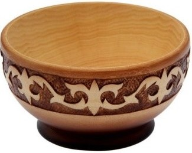
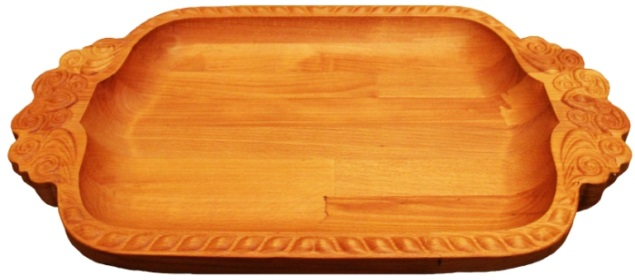
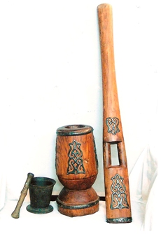
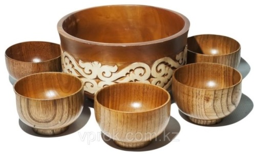
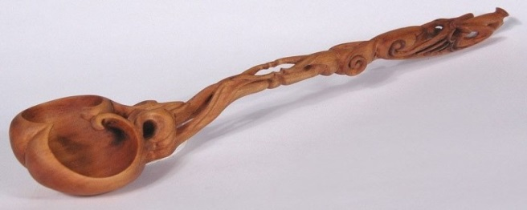
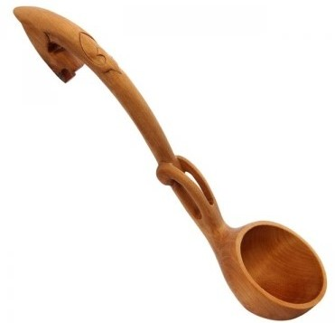
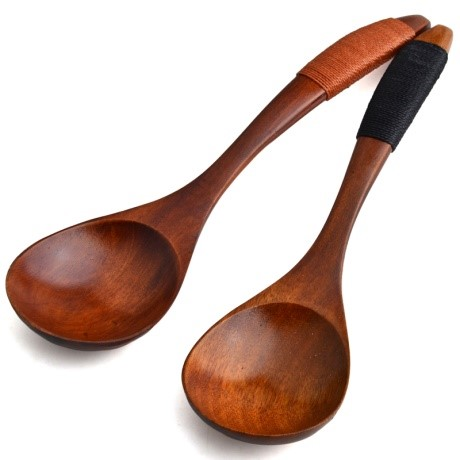
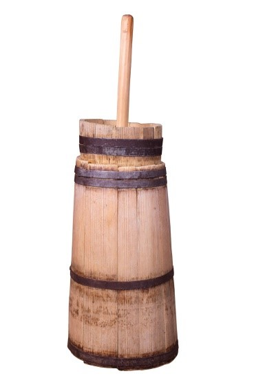
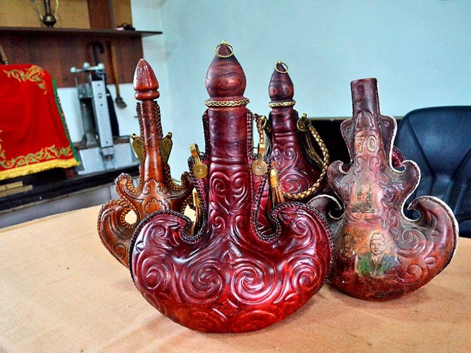
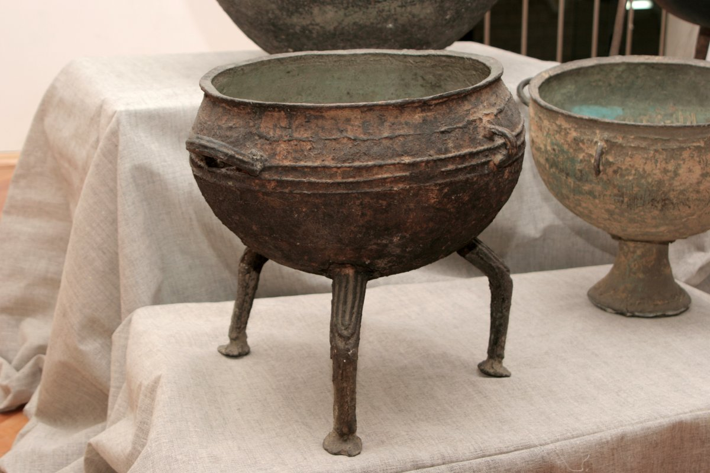

Ұлттық ыдыс -аяқ
Бұл қазақ мақаласында терең мағына, үлкен тәрбиелік мәні бар. Әдемі ыдыста тіпті ең қарапайым тағам тәбетті көрінеді. Ежелгі халық шеберлері емен, қайың және басқа да күшті ағашты пайдалана отырып, экологиялық таза табиғи материалдан ыдыс жасады.

Тостаған
Стақан өзінің басталуы түркі ағаш ыдысынан алады-тостаған (Пиала түріндегі төменгі дөңгелек ыдыс). Ұзақ жылдар ішінде нысаны мен атауы өзгеріске ұшырады. Стаканның маңызды физикалық сипаттамасы-ол дайындалған материал және осы материалдың қасиеттері. Ең жиі стакандар шыныдан жасалған. Мұндай тәжірбие ағылшын, неміс, француз тілдерінде "стакан" және "стекло" омонимдер болып табылады: glass, Glas, verre"Тостаган (тостакан; каз. тостаған) - Қазақстан және Орта Азия халықтарының мәдениетінде тамақты немесе сусындарды жабдықтау үшін пайдаланылатын қаламсыз, жартылай сферикалық пішінді шағын ыдыс. Біздің дәуірімізге дейінгі 1-ші мыңжылдықтың екінші жартысынан бастап бізге белгілі. Пішінде көлемді төмен пиалға немесе ыдысқа ұқсайды. Ерекше белгі - ағаш кесектерінен тұтас ұсақталған.
Тостаған пішіні ежелгі көшпенділердің көшпелі өмір салтына байланысты. Қаламсыз дөңгелек пішін мұндай ыдысты әсіресе жинақы, біреуі екіншісіне жинауға мүмкіндік берді, бұл көшпенді жағдайларда маңызды болды.

Астау
"Астау" - қазақтың көне ағаш ыдысы, бешбармақ, палау, ет, қой басын беретін ыдыс. Экологиялық темекінің басты артықшылығы-мұндай тағамда бешбармақ суытпайды,ал ағаш мерекелік үстелге әдемі көрініс береді. "Астау" тек қана қатты ағаштаң – қайың мен талдан жасалады.
Бір шеберде "астау" жасауға 3-4 күн кетуі мүмкін, ал үшіншісі бір күнде әдемі темекі істеуге болады.
"Астау" бешбармақ үшін (кең шеттері ұзын), Палау үшін (дөңгелек және мұндай терең емес) және қойдың қайнатылған басын беру үшін жалпақ болуы мүмкін.
Бұрын қазақтарда әдет-ғұрып болған: жақын арада бала туған отбасының басшысы шеберге барып, оған "астауға"тапсырыс берген. Бала туған кезде ыдыс ата-аналардың үйінде болуы керек еді. Ал жылдар өткенде, өсіп келе жатқан ұлы немесе қызы өздері отбасын құрған кезде, ата-аналар жалпы берілген ыдыспен оны солармен бірге балаларға сый-сияпат жасады. Ол мұрагердің үйі мен отбасынды бақытсыз рухтар мен бақытсыздықтан сақтауға қабілетті сиқырлы күшпен ие болды деп саналды.

Келі-келсап
Кели (күп-тары қабыршақтауға арналған ыдыс-аяқ) қатты тұқымды ағаштың тұтас бөлігінен жоғары тар бөлігі бар қиық конус түрінде шығарылады. Құйғаннан кейін ішкі бөлігін беріктікке және кедір-бұдырларды жоюға күйдіреді. Келінің екі жағынан жұмыс кезінде ыңғайлы болу үшін ойықтарды қалдырады. Биіктігі 70-80 см, орташа диаметрі 30 см.
Ыдысты қауыздау үшін ұзындығы 1 м, диаметрі 15 см болатын ағаштың тұтас бөлігінен дөңгелектенеді келсап (итергіш) қажет. Төменгі бөлігі дөңгелек пішінді жасайды.

Зерең
Қымыз мен шұбат үшін терең тостаған, қалың және тік бүйірлері мен кең түбі бар. Дәннің көлемі мен сыртқы түрі шарға ұқсас. Дәннің беріктігі үшін ағаштың қатты тұқымдарынан жасалған және ою-өрнекпен әшекейленген. Ожау (черпак), аяқ, тостаған (тостаған) - сусындарға арналған ыдыс.
Тегене
Қымызға арналған тік қалыңдатылған және басып алуға арналған дөңгелек "құлақшалары" сыйымды ыдыстар. Ағаштың қатты тұқымдарынан шығарылады, құлақтары кейде темір немесе мыстан жасалады. Күміс және сүйек өрнектерімен әшекейленген. Өрнекті ағаш қақпағы ыдыс-аяққа қосымша талғампаздық береді.
Тегене-ауыр ыдыс, сондықтан оны тек мереке күндері ғана пайдаланады. Қалған уақытта ол майланады және тікелей күн сәулесі жоқ жерде сақталады.

Саптаяқ
Сап-қалам, аяқ-тостаған, әдемі өрнектермен безендірілген ұзын пішінді ағаш кесе. Қымыз басқа ыдысқа құюға ыңғайлы.

Ожау
Ұзын сабы бар ожау ағаштың тұтас бөлігінен жасалады және өрнектермен безендіріледі. Тұтқада ыңғайлы болу үшін шұңқырды егеді. Ожау бірдей және екі есе болады. Ожау-шарға ажырамас қосымша.

Қасық
Қасық ожаудан кіші, ағаштың тұтас кесектерінен жасалады, сондықтан ағашқасық (ағаш- дерево, қасық – ложка)деп аталады, жарқын бояулармен боялады. Балалар үшін де, ересектер үшін де жасайды.

Күбі
Қымыз, айран, шұбат және ашытылған теріге арналған ағаш ыдыс. Күбі ағаштың тұтас кесегінен немесе емен, тальник, арчадан жасалады. Рейкадан күбі үшін түп орнатылады, рейканың сыртына сақиналармен тартылады. Күбі ағаштың тұтас бөлігі тегіс болуға үшін күйдіріледі. Күбі жіңішке жоғарғы бөлігі, әсем қақпағы бар конус түрінде болады. Қақпақтың ортасында немесе шетінде шуды қаламға арналған тесік бұрғылайды. Сиымдылығы -20-30 л, биіктігі -80 см. Сондай - ақ ағаштан кіші мөлшердегі ыдыс- кұршек шығарады. "Май қасық "(май - масло).
Саба
Ертеде қымыз, шұбат ашыту үшін, іркіт пісу үшін мал терісінен тігілетін ыдыс — саба пайдаланылған. Иленген теріні су сеуіп жібітіп, өңін ішіне қаратып, сабаға лайықтап пішеді. Саба пирамида пішінді, яғни түп жағы төрт бұрышты, кең, мойын жағы тар, жіңішкерек етіп жасалады. Оның мойнының кеңдігі піспек емін-еркін сыярлықтай етіп алынады да, саба мойнының бір бүйірінен үш бұрышты баулық шығарылады. Баулыққа жіптен ескен бау тағылып, ол керегенің басына байланады. Жақсы күтіліп, ысталған сабаның қымызы өте дәмді және жұғымды болады. Сабаның тігістері түйенің шуда жүнінен иірілген, мықты жіппен сырт жағынан жөрмеп тігіледі. Саба тігіліп болғаннан кейін оның ішіне құм не болмаса топырақ толтырып кереді. Әбден қалыпқа түсіп, кепкеннен кейін сабаның ішіндегі құмды не топырақты төгіп тастап, ішін тазартып жуады да, тағы бір дүркін түтінге ұстап ыстайды. Одан соң сумен тазартып шайқап тастап, сырты мен ішін қойдың құйрық майымен не болмаса жылқының майымен жақсылап майлайды. Күннің көзіне қойып майын сіңіреді. Сабаны пайдаланар алдында сиыр сүтімен тағы бір дүркін шайқайды. Сабаны пісерде оның бауын көтере байлайды да, пісіліп болған соң бауын босатып, мойнын байлаған жібін шешіп қояды. Сабаның ішіндегі астың дәмі бұзылмауы және саба шіріп кетпеуі үшін оны айына кемінде бір рет босатып, ішін жылы сумен шайқап жуып, күнге кептіріп отырады.

Қазан – қазақтың қуаты
. Белгілі ақын Жанарбек Әшімжанның «Қара қазанда асылған аппақ көже, Қара ұлдың бойына қуат берді» деп келетін өлеңі бар. Қазанға байланысты салт-жоралғыларымыз да жеткілікті. Соның бірі – жарысқазан. Жас босанған келінге жасалатын салт. Негізі ислам дінінен алынған. Біздің қазақ келіншектері де жас ананың аман-есен босануы үшін Аллаға шын жүрекпен жалбарынып, жер-жерден қазан асқан. Осы дәстүрді қазақ «жарыс қазан» деп атаған. Сол сияқты, бізде «қазан шегелеу» деген салт бар. Әзіл-қалжыңы жарасқан адамдар бір-бірінің үйіне бас қосып барып, «осы үйдің қазанын шегелей келдік» дейді екен. Сондай үй иесі де әзілдеп: «Жақсы болды ғой, өзіміз де қазан шегелегіш шебер іздеп жүр едік» деп төрге шығарып, қонақжайлылық танытқан. Яғни «қазан шегелеу» қонақ бола келдік дегенді білдірген. Қазақта «айрылыс қазан» деген де салт бар. Ұзақ уақыт қоныстас, ауылдас болған адамдар басқа жаққа қоныс аударар алдында ел-жұртты шақырып ас берген. Міне, осы ас «айрылыс қазан» делінеді. Салтты айтамыз-ау, қазан қазақтың заңына да кіріп кеткенін айтсаңшы. Әз-Тәукенің «Жеті жарғысында» өлім жазасына кесілген жанның жеті айып төлеп құтыла алатыны айтылады. Соның алғашқысы – қара қазан төлеу.
